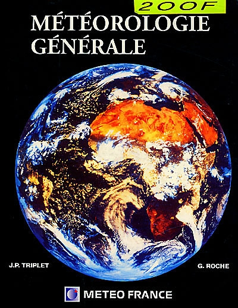

Ici vous apprendrez les bases de la Météorologie Générale, ainsi que les bases comme la préssion atmosphérique, etc...

Ici vous apprendrez les bases des Orages, sur comment ils se forment et les dégâts qui lui sont associés.

Ici vous apprendrez les bases des nuages, leurs classifications et les temps associés

Ici vous apprendrez les bases des Fronts en météorologie, les phénomènes qui leurs sont attribués.

Ici vous apprendrez le vent en météo, vous verrez aussi sur comment sa se forme et les dégâts que sa peut provoquer.

Ici vous apprendrez les Phénomènes Extrèmes, les causes et leurs dégâts.